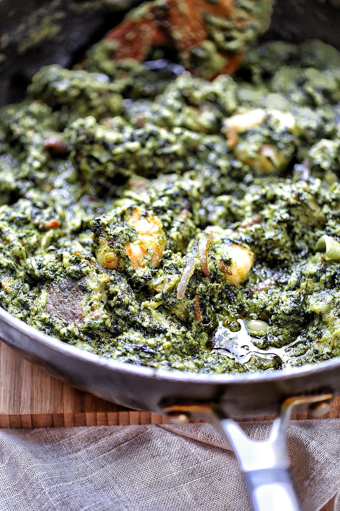
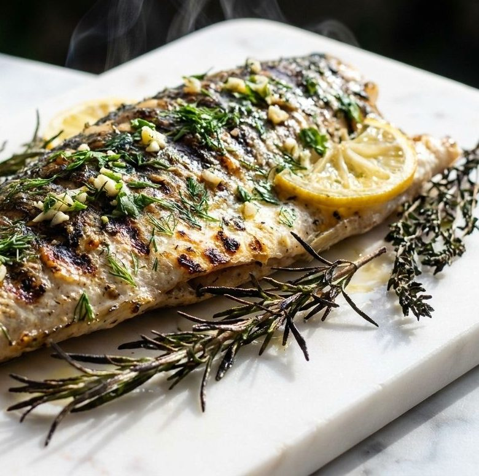
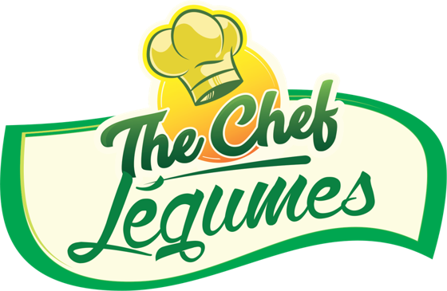
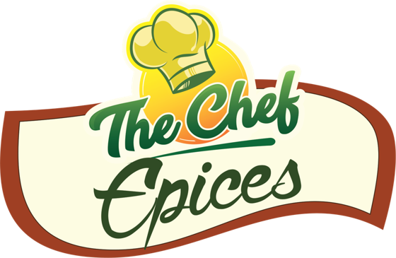
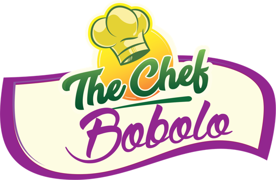
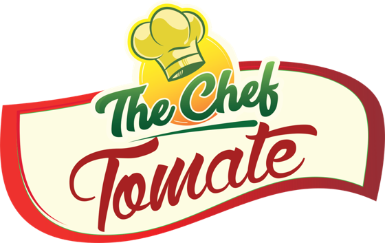
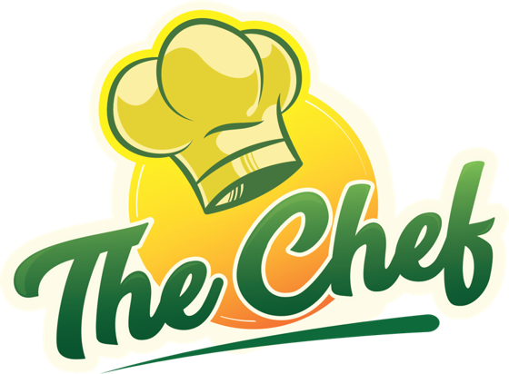
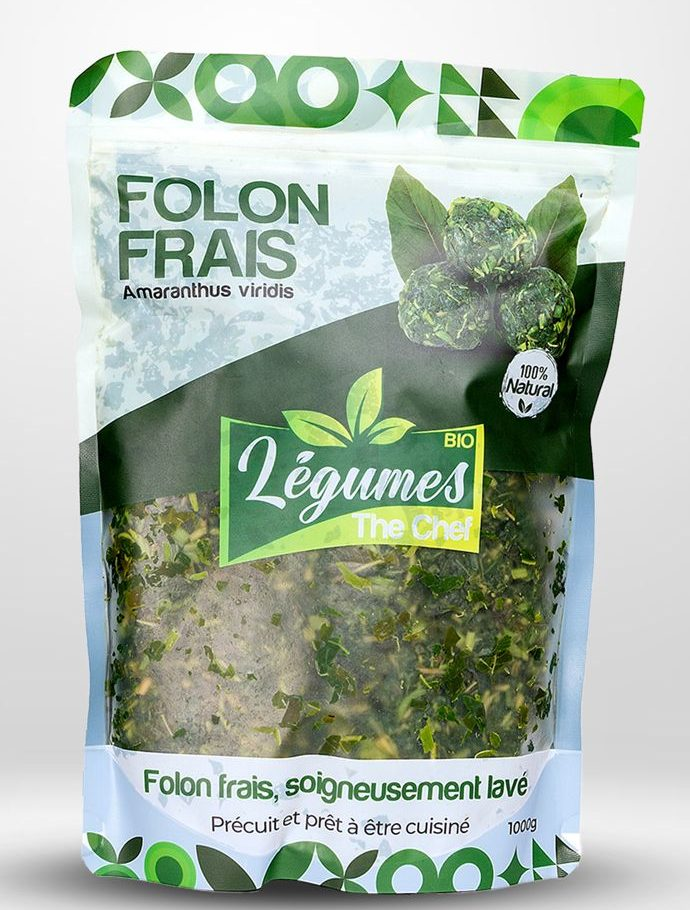

THE CHEF LÉGUMES
Pensé pour le Ndolé
Une préparation à base de légumes sélectionnés, conçue notamment pour faciliter la réalisation du célèbre Ndolé camerounais et d’autres recettes à base de légumes.
Découvrir The Chef LégumesDu Cameroun à votre table
Découvrez The Chef, une gamme de produits inspirés de la tradition culinaire camerounaise et conçus pour faciliter la préparation de plats savoureux avec des ingrédients sélectionnés et d’origine naturelle.







Notre histoire
The Chef puise son inspiration dans la richesse de la cuisine camerounaise, connue pour la diversité de ses épices, de ses légumes, de ses sauces et de ses recettes traditionnelles. Notre mission est de rendre ces saveurs plus accessibles tout en respectant l’identité et l’authenticité de cette cuisine.
De Douala à Yaoundé, du Ndolé au poisson braisé, la cuisine camerounaise repose sur des ingrédients, des parfums et des techniques transmis de génération en génération. The Chef souhaite préserver cet héritage tout en l’adaptant au rythme de la vie moderne.
The Chef : notre héritage culinaire, votre cuisine.
Produit phare
THE CHEF LÉGUMES est principalement destiné à faciliter la préparation du Ndolé, l’un des plats les plus emblématiques du Cameroun.
Le Ndolé est un plat traditionnel camerounais préparé notamment à partir de feuilles de Ndolé, d’arachides et de différents accompagnements comme la viande, les crevettes ou le poisson. Il occupe une place particulière dans la gastronomie camerounaise.
Avec The Chef Légumes, l’objectif est de réduire le temps de préparation tout en permettant aux familles de retrouver les saveurs caractéristiques de ce plat emblématique.

Également dans la gamme : Folon frais
Soigneusement lavé, précuit et prêt à être cuisiné – sachet de 1000 g.
Nos produits
Quatre produits inspirés de la cuisine camerounaise, pensés pour vos plats africains et internationaux.
Pensé pour le Ndolé
Une préparation à base de légumes sélectionnés, conçue notamment pour faciliter la réalisation du célèbre Ndolé camerounais et d’autres recettes à base de légumes.
Découvrir The Chef LégumesLe goût naturel de vos assaisonnements
Un mélange aromatique inspiré des traditions culinaires africaines, conçu pour assaisonner facilement poissons, viandes, grillades, sauces, légumes et autres préparations. Une alternative pratique pour celles et ceux qui préfèrent les mélanges d’épices et d’ingrédients d’origine naturelle plutôt que de dépendre uniquement des assaisonnements industriels.
Une touche d’authenticité camerounaise
Un mélange inspiré des saveurs camerounaises, conçu pour apporter caractère et profondeur aux accompagnements, poissons, viandes, sauces et préparations traditionnelles.
Le Bobolo, bâton de manioc fermenté et cuit dans des feuilles, est un accompagnement traditionnel du Cameroun, souvent servi avec le Ndolé, le poisson braisé ou les sauces.
Toute la richesse de la tomate dans vos plats
Une préparation aromatique à base de tomate et d’ingrédients sélectionnés destinée à donner couleur, profondeur et saveur aux sauces, viandes, poissons et plats mijotés. La solution simple pour apporter un assaisonnement riche en saveurs à tous vos plats.
Notre approche
The Chef privilégie une approche basée sur des ingrédients sélectionnés et des saveurs issues de produits d’origine naturelle.
Des ingrédients choisis pour leur goût, leur parfum et leur capacité à sublimer les recettes.
Des mélanges conçus pour les consommateurs souhaitant cuisiner avec davantage d’épices, de plantes et d’ingrédients d’origine naturelle.
Une inspiration puisée dans les cuisines camerounaise et africaine.
Des produits adaptés aussi bien aux recettes africaines qu’à de nombreux plats européens, américains ou internationaux.
Made with carefully selected natural ingredients
Assaisonnement africain
Les cuisines africaines modernes utilisent souvent différents cubes et assaisonnements industriels pour intensifier les saveurs. The Chef propose une autre approche : construire le goût grâce à des mélanges d’épices, de légumes, de tomate et d’ingrédients sélectionnés.
L’objectif n’est pas seulement d’assaisonner davantage, mais d’obtenir une saveur riche grâce à la combinaison naturelle des différents ingrédients.
Moins de dépendance aux assaisonnements industriels. Plus de place aux véritables saveurs des ingrédients.
Grand classique camerounais
Le poisson braisé camerounais est l’un des grands classiques de la cuisine camerounaise. Les mélanges The Chef peuvent être utilisés pour préparer des marinades riches en arômes destinées au poisson, au poulet, aux viandes et aux grillades.
Mélanger le produit The Chef avec les ingrédients nécessaires à la marinade.
Laisser les saveurs pénétrer le poisson ou la viande.
Faire cuire au barbecue, au grill, au four ou selon la méthode traditionnelle.
Cameroonian food · African spices · African seasoning
Les produits The Chef s’inspirent du Cameroun mais ne sont pas réservés uniquement aux recettes camerounaises. Les épices et préparations peuvent également être utilisées pour enrichir des cuisines africaines, européennes, américaines, caribéennes ou internationales.
Une origine camerounaise. Des possibilités sans frontières.
Nos atouts
Des produits inspirés par l’une des cuisines les plus riches et diversifiées d’Afrique centrale.
Une approche mettant en avant les épices, légumes, tomates et ingrédients sélectionnés.
Des préparations pensées pour faciliter la cuisine quotidienne.
Des mélanges conçus pour retrouver des goûts proches des traditions culinaires africaines.
Des produits utilisables aussi bien pour les plats camerounais que pour de nombreuses recettes internationales.
Simple et rapide
Sélectionnez The Chef Légumes, The Chef Épices, The Chef Bobolo ou The Chef Tomate.
Ajoutez la quantité désirée au panier ou passez directement votre commande via WhatsApp.
Recevez vos produits et utilisez-les pour préparer vos plats préférés.
Boutique
Ajoutez vos produits au panier, puis finalisez votre commande en ligne ou via WhatsApp.
Recettes
Des idées simples pour le quotidien, de la cuisine camerounaise traditionnelle aux grillades du week-end.
Témoignages
« The Chef me permet de retrouver plus facilement les saveurs camerounaises lorsque je cuisine à la maison. »
« J’utilise les épices pour le poisson et le poulet braisé. C’est simple et très pratique. »
« The Chef Légumes facilite énormément la préparation de mon Ndolé. »
Avis présentés à titre d’exemple – maquette en cours de finalisation.
The Chef transforme l’héritage culinaire camerounais en solutions simples et savoureuses pour la cuisine d’aujourd’hui. Du Ndolé au poisson braisé, des sauces traditionnelles aux recettes internationales, découvrez une nouvelle façon de cuisiner avec des ingrédients et des saveurs inspirés de la nature.
Contact
Une question sur nos produits, une commande en gros, une demande de distribution ? Écrivez-nous, nous vous répondrons rapidement.